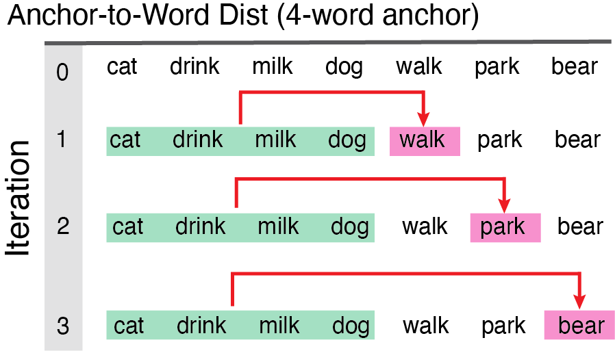
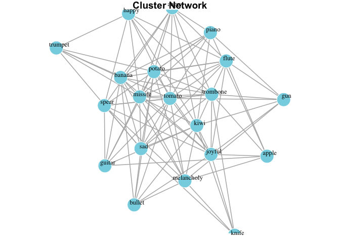
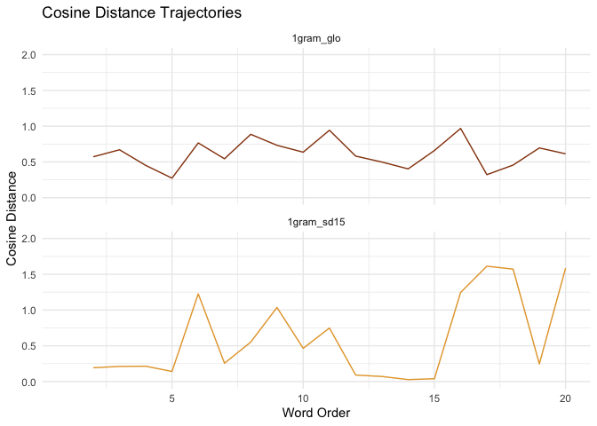

SemanticDistance can compute pairwise semantic distance relationships in ordered and unordered language samples, including: Monologues: Any ordered text sample NOT delineated by a talker/speaker (e.g., stories, narratives). The minimal requirement for a monologue is one row and one column with some text in it.; Dialogues: An ordered language sample split by a talker/speaker/interlocutor factor. The minimum requirment is two cells with interlocutor identity and some text; Word Pairs in Columns: Paired string data arrayed across two columns (e.g., Dog-Leash); Unordered Word Lists: Unordered list of words (nominally one column, all text in one row) that will be transformed into a distance matrix, network model, or dendrogram
Prep and Analyze Your Data
- Store your text and project files within a dedicated folder/directory (e.g., ‘mytexts/’)
- Format your data as CSV or txt. Although SemanticDistance is fairly robust to different character encodings, many proograms such as Excel introduce weird hidden characters into strings.
- Label your target text and metadata columns offline however you like (e.g., mytext, word, langoutput)
- Import your text and associated metadata (e.g., document_id, timestamps, etc.) as a dataframe.
- Identify the format of your sample (e.g., monologue, dialogue, columns, unstructured).
- Install and load the SemanticDistance package
- Choose a principled set of cleaning parameters (e.g., should I omit stopwords? should I lemmatize?)
- Run the approproate cleaning function that best fits your data stucture and aims
- Run the appropriate distance function that best fits your data stucture and aims
- Visualize your data using built-in functions or follow-up with your own preferred statistical approach.
Install the development version of SemanticDistance from GitHub using devtools.
#install.packages("devtools")
#devtools::install_github("Reilly-ConceptsCognitionLab/SemanticDistance")
library(SemanticDistance)–MONOLOGUES–
Clean Monologue Transcript (clean_monologue)
Transforms all text to lowercase then optionally cleans (omit stopwords, omit non-alphabetic chars), lemmatizes (transforms morphological derivatives of words to their standard dictionary entries), and splits multiword utreerances into a one-word-per row format. You can generally leave split_strings in its default state (TRUE). ‘clean_monologue’ appends several new variables to your original dataframe: id_row_orig a numeric identifier marking the original row where a word or group of words appeared; ’id_row_postsplit a unique identifier marking each word’s ordered position in the dataframe after splitting multiword utterances across rows; word_clean result of all cleaning operations, needed for distance calculations.
Arguments to ‘clean_monologue’:
dat = raw dataframe with at least one column of text
wordcol = quoted variable column name where your target text lives (e.g., ‘mytext’)
clean = applies cleaning functions (e.g., punct out, lowercase, etc); T/F default is TRUE
omit_stops = omits stopwords, T/F default is TRUE
lemmatize = transforms raw word to lemmatized form, T/F default is TRUE
split_strings = option to split multiword utterances into separate rows, T/F default is TRUE
Monologue_Cleaned <- clean_monologue(dat=Monologue_Structured, wordcol='mytext', clean=TRUE, omit_stops=TRUE, split_strings=TRUE)
head(Monologue_Cleaned, n=8)
#> # A tibble: 8 × 5
#> id_row_orig word_clean timestamp mytext id_row_postsplit
#> <fct> <chr> <int> <chr> <int>
#> 1 1 <NA> 1 "the" 1
#> 2 2 girl 2 "girl" 2
#> 3 3 walk 3 "walked" 3
#> 4 4 down 4 "down " 4
#> 5 5 <NA> 5 "the " 5
#> 6 6 street 6 "street" 6
#> 7 7 <NA> 7 "the" 7
#> 8 8 boxer 8 "boxer" 8Option 1: Ngram-to-Word Distance (dist_ngram2word)
 Computes cosine distance for two models (embedding and experiential) using a rolling ngram approach consisting of groups of words (ngrams) to the next word. IMPORTANT the function rolls backward from the target word skipping over NAs until filling the desired ngram size.
Computes cosine distance for two models (embedding and experiential) using a rolling ngram approach consisting of groups of words (ngrams) to the next word. IMPORTANT the function rolls backward from the target word skipping over NAs until filling the desired ngram size.
Arguments to ‘dist_ngram2word’:
dat = dataframe of a monologue transcript cleaned and prepped with clean_monologue fn
ngram = window size preceding each new content word, ngram=1 means each word is compared to the word before it
Ngram2Word_Dists1 <- dist_ngram2word(dat=Monologue_Cleaned, ngram=1) #distance word-to-word
head(Ngram2Word_Dists1)
#> # A tibble: 6 × 7
#> id_row_orig word_clean timestamp mytext id_row_postsplit CosDist_1gram_glo
#> <fct> <chr> <int> <chr> <int> <dbl>
#> 1 1 <NA> 1 "the" 1 NA
#> 2 2 girl 2 "girl" 2 NA
#> 3 3 walk 3 "walked" 3 0.470
#> 4 4 down 4 "down " 4 0.283
#> 5 5 <NA> 5 "the " 5 NA
#> 6 6 street 6 "street" 6 0.362
#> # ℹ 1 more variable: CosDist_1gram_sd15 <dbl>Option 2: Ngram-to-Ngram Distance (dist_ngram2ngram)

User specifies n-gram size (e.g., ngram=2). Distance computed from each two-word chunk to the next iterating all the way down the dataframe until there are no more words to ‘fill out’ the last ngram. Note this distance function only works on monologue transcripts where there are no speakers delineated and word order matters.
Arguuments to ‘dist_ngram2ngram’:
dat = dataframe w/ a monologue sample cleaned and prepped
ngram = chunk size (chunk-to-chunk), in this case ngram=2 means chunks of 2 words compared to the next chunk
Ngram2Ngram_Dist1 <- dist_ngram2ngram(dat=Monologue_Cleaned, ngram=2)
head(Ngram2Ngram_Dist1)
#> # A tibble: 6 × 7
#> id_row_orig word_clean timestamp mytext id_row_postsplit CosDist_2gram_GLO
#> <fct> <chr> <int> <chr> <int> <dbl>
#> 1 1 <NA> 1 "the" 1 NA
#> 2 2 girl 2 "girl" 2 NA
#> 3 3 walk 3 "walked" 3 NA
#> 4 4 down 4 "down " 4 0.141
#> 5 5 <NA> 5 "the " 5 0.0608
#> 6 6 street 6 "street" 6 0.319
#> # ℹ 1 more variable: CosDist_2gram_SD15 <dbl>Option 3: Anchor-to-Word Distance (dist_anchor2word)
 Models semantic distance from each successive new word to the average of the semantic vectors for the first block of N content words. This anchored distance provides a metric of overall semantic drift as a language sample unfolds relative to a fixed starting point.
Arguments to ‘dist_anchor’:
dat = dataframe monologue sample cleaned and prepped using ‘clean_monologue’
anchor_size = size of the initial chunk of words for chunk-to-new-word comparisons fn
Anchored_Dists1 <- dist_anchor(dat=Monologue_Cleaned, anchor_size=8)
head(Anchored_Dists1)
#> # A tibble: 6 × 4
#> id_row_postsplit word_clean CosDist_Anchor_GLO CosDist_Anchor_SD15
#> <int> <chr> <dbl> <dbl>
#> 1 1 <NA> NA NA
#> 2 2 girl 0.255 0.439
#> 3 3 walk 0.159 0.173
#> 4 4 down 0.116 0.275
#> 5 5 <NA> NA NA
#> 6 6 street 0.116 0.0457—DIALOGUES—
Clean Dialogue Transcript (clean_dialogue)
This could be a conversation transcript or any language sample where you care about talker/interlocutor information (e.g., computing semantic distance across turns in a conversation). Your dataframe should nominally contain a text column and a speaker/talker column.
Arguments to ‘clean_dialogue’ are:
dat = your raw dataframe with at least one column of text AND a talker column
wordcol = column name (quoted) containing the text you want cleaned
whotalks = column name (quoted) containing the talker ID (will convert to factor)
clean = applies cleaning function, T/F default is TRUE
omit_stops = omits stopwords, T/F default is TRUE
lemmatize = transforms raw word to lemmatized form, T/F default is TRUE
Dialogue_Cleaned <- clean_dialogue(dat=Dialogue_Structured, wordcol="mytext", whotalks = "speaker", clean=TRUE, omit_stops=TRUE, lemmatize=TRUE, split_strings=TRUE)
head(Dialogue_Cleaned, n=12)
#> # A tibble: 12 × 7
#> id_row_orig word_clean mytext speaker talker id_row_postsplit id_turn
#> <fct> <chr> <chr> <chr> <fct> <int> <dbl>
#> 1 1 donkey donkey P1 P1 1 1
#> 2 2 astronaut astronaut P2 P2 2 2
#> 3 3 bubble bubble P1 P1 3 3
#> 4 4 street street P2 P2 4 4
#> 5 5 pigeon Pigeon P1 P1 5 5
#> 6 6 dolphin Dolphin P2 P2 6 6
#> 7 7 eagle Eagle P1 P1 7 7
#> 8 8 eel eel P2 P2 8 8
#> 9 9 test test P1 P1 9 9
#> 10 10 beagle Beagle P2 P2 10 10
#> 11 11 cow Cow P1 P1 11 11
#> 12 12 tiger Tiger P2 P2 12 12Dialogue Distance Turn-to-Turn (dist_dialogue)
Averages the semantic vectors for all content words in a turn then computes the cosine distance to the average of the semantic vectors of the content words in the subsequent turn. Note: this function only works on dialogue samples marked by a talker variable (e.g., conversation transcripts). It averages across the semantic vectors of all words within a turn and then computes cosine distance to all the words in the next turn. You just need to feed it a transcript formatted with clean_dialogue. ‘dist_dialogue’ will return a summary dataframe that distance values aggregated by talker and turn (id_turn).
Arguments to ‘dist_dialogue’:
dat = dataframe w/ a dialogue sample cleaned and prepped using ‘clean_dialogue’
DialogueDists <- dist_dialogue(dat=Dialogue_Cleaned)
head(DialogueDists)
#> # A tibble: 6 × 5
#> turn_count talker n_words glo_cosdist sd15_cosdist
#> <int> <fct> <int> <dbl> <dbl>
#> 1 1 P1 1 0.993 0.856
#> 2 2 P2 1 0.933 0.413
#> 3 3 P1 1 0.732 0.472
#> 4 4 P2 1 0.927 0.406
#> 5 5 P1 1 0.809 0.624
#> 6 6 P2 1 0.772 0.192WORD PAIRS IN COLUMNS
Clean Word Pairs (clean_paired_cols)
SemanticDistance also computes pairwise distance for data arrayed in columns. Run the function, the cleaned columns will appear in the dataframe.
Arguments to ‘clean_paired_cols’:
dat = your raw dataframe with two columns of paired text
word1 = quoted variable reflecting the column name where your first word lives
word2 = quoted variable reflecting the column name where your first word lives
clean = applies cleaning functions, T/F default is TRUE
omit_stops = omits stopwords, T/F default is TRUE
lemmatize = transforms raw word to lemmatized form, T/F default is TRUE
WordPairs_Clean <- clean_paired_cols(dat=Word_Pairs, wordcol1='word1', wordcol2='word2', clean=TRUE, omit_stops=TRUE, lemmatize=TRUE)
head(WordPairs_Clean, n=12) #view head cleaned data
#> word1 word2 id_row_orig word1_clean1 word2_clean2
#> 1 Dog trumpet 1 dog trumpet
#> 2 the BANANA 2 <NA> banana
#> 3 rat astronaut 3 rat astronaut
#> 4 *&^% lizard 4 <NA> lizard
#> 5 bird bird 5 bird bird
#> 6 shark shark 6 shark shark
#> 7 table 38947 7 table <NA>
#> 8 Dog leash 8 dog leash
#> 9 cat fur 9 cat fur
#> 10 ^ whale 10 <NA> whale
#> 11 steak potato 11 steak potato
#> 12 bed pillow 12 bed pillowDistance Word Pairs Columns (dist_paired_cols)
Generates semantic distances (Glove and SD15) between word pairs in separate columns. Output of ‘dist_paired_cols’ on 2-column arrayed dataframe. Arguments to dist_paired_cols:
Arguments to ‘dist_paired_cols’: dat = dataframe w/ word pairs arrayed in columns cleaned and prepped using ‘clean_2cols’ fn
Columns_Dists <- dist_paired_cols(WordPairs_Clean) #only argument is dataframe
head(Columns_Dists)
#> word1 word2 id_row_orig word1_clean1 word2_clean2 CosDist_SD15
#> 1 Dog trumpet 1 dog trumpet 0.4534507
#> 2 the BANANA 2 <NA> banana NA
#> 3 rat astronaut 3 rat astronaut 1.2154729
#> 4 *&^% lizard 4 <NA> lizard NA
#> 5 bird bird 5 bird bird 0.0000000
#> 6 shark shark 6 shark shark 0.0000000
#> CosDist_GLO
#> 1 0.8409885
#> 2 NA
#> 3 0.9272540
#> 4 NA
#> 5 0.0000000
#> 6 0.0000000–UNORDERED WORD LISTS–
Clean unordered word list (clean_unordered)
Prep a vector of words for hierarchical clustering or a network visualization. ‘clean_unordered’ will retain only one instance of each string (distinct, no duplicates) and no missing values.
Arguments to ‘clean_unordered’:
df = raw dataframe with at least one column of text
wordcol = quoted variable reflecting where your text lives
clean = applies cleaning functions, T/F default is TRUE
omit_stops = omits stopwords, T/F default is TRUE
lemmatize = transforms raw word to lemmatized form, T/F default is TRUE
Clusters_Clean <- clean_unordered(dat=Semantic_Clusters, wordcol="mytext", clean=TRUE, omit_stops=TRUE, lemmatize=TRUE)
head(Clusters_Clean)
#> # A tibble: 6 × 6
#> id_row_orig word_clean ID_JR mytext category id_row_postsplit
#> <fct> <chr> <int> <chr> <chr> <int>
#> 1 1 trumpet 1 trumpet music 1
#> 2 2 trombone 2 trombone music 2
#> 3 3 flute 3 flute music 3
#> 4 4 piano 4 piano music 4
#> 5 5 guitar 5 guitar music 5
#> 6 6 gun 6 gun weapon 6Distance Matrix All Word Pairs (dist_matrix)
Returns square matrix where each entry [i,j] is the cosine distance between word i and word j. Matrix contains original words as both row and column names for reference. User specifies whether to return a matrix based on embeddings (GLOVE) or experiential norms (SD15).
Arguments to ‘dist_matrix’:
dat = dataframe cleaned and prepped using ‘clean_unordered4matrix’ fn
dist_type = quoted argument default is ‘embedding’, other option is “SD15” fn
MyDistMatrix <- dist_matrix(dat=Clusters_Clean, dist_type='embedding')
MyDistMatrix[1:7, 1:7] #Print columns 1:7, rows 1:7 square matrix
#> trumpet trombone flute piano guitar gun knife
#> trumpet 0.0000000 0.5717885 0.5138417 0.5558156 0.5520448 0.8668525 0.8766921
#> trombone 0.5717885 0.0000000 0.6698538 0.6488034 0.6219389 0.9475109 0.8880578
#> flute 0.5138417 0.6698538 0.0000000 0.4511922 0.5203509 0.9288003 0.8349393
#> piano 0.5558156 0.6488034 0.4511922 0.0000000 0.2730333 0.8374068 0.7856145
#> guitar 0.5520448 0.6219389 0.5203509 0.2730333 0.0000000 0.7653835 0.7351402
#> gun 0.8668525 0.9475109 0.9288003 0.8374068 0.7653835 0.0000000 0.5440601
#> knife 0.8766921 0.8880578 0.8349393 0.7856145 0.7351402 0.5440601 0.0000000–DATA VISUALIZATION OPTIONS–
Choose the visualization strategy that best fits your data. Are they ordered? Is it a monologue? Are you interested in chunk-to-chunk distance or distance from each new element to a fixed anchor in the beginning? Your three options are explained to follow:
Monologue Time Series: ngram2word
Plots the word id_row as x-axis (a proxy for time) by distance measure (facetted GLO and SD15). Add red line annotation if semantic distance jump is z>3 based on the distribution of that time series, Add options for interpolation and rolling average window, zscore threshold for marking annotation
Arguments to ‘viz_monologue’: dat dataframe with CosDist values and row_id_postsplit vars appended interpolate T/F linear interpolation option across missing observations of row, default is TRUE roll_avg rolling average window size, default is 0 facet T/F option to facet by cosine distance type, default is TRUE annotate T/F option to append annotations (red lines where z>2.5 for distance jump), default is TRUE
clusters_clean <- clean_monologue(dat=Semantic_Clusters, wordcol='mytext', clean=TRUE, omit_stops=TRUE, split_strings=TRUE)
clusters_dist <- dist_ngram2word(dat=clusters_clean, ngram=1)
FirstViz <- viz_monologue(dat=clusters_dist, interpolate=TRUE, roll_avg=0, facet=TRUE, annotate=TRUE)
#> Warning: Using one column matrices in `filter()` was deprecated in dplyr 1.1.0.
#> ℹ Please use one dimensional logical vectors instead.
#> ℹ The deprecated feature was likely used in the SemanticDistance package.
#> Please report the issue at
#> <https://github.com/Reilly-ConceptsCognitionLab/SemanticDistance/issues>.
#> This warning is displayed once every 8 hours.
#> Call `lifecycle::last_lifecycle_warnings()` to see where this warning was
#> generated.
print(FirstViz)
#> Warning: Removed 2 rows containing missing values or values outside the scale range
#> (`geom_line()`).
Monologue Time Series: dist_anchor
In a story
grandpa_clean <- clean_monologue(dat=Grandfather_Passage, wordcol='mytext', clean=TRUE, omit_stops=TRUE, split_strings=TRUE)
grandpa_dist <- dist_anchor(grandpa_clean, anchor_size=8)
AnchorViz <- viz_monologue(dat=grandpa_dist, interpolate=TRUE, roll_avg=0, facet=TRUE, annotate=TRUE)
print(AnchorViz)
#> Warning: Removed 2 rows containing missing values or values outside the scale range
#> (`geom_line()`).
—Extras—
Sample Language Transcripts
SemanticDistance contains some sample language transcripts that will automatically load when you call the package. These can be helpful for evaluating and debugging your own own transcripts.
Monologue_Structured: Dataframe 1-word per row already split no missing observations
head(Monologue_Structured)
#> timestamp mytext
#> 1 1 the
#> 2 2 girl
#> 3 3 walked
#> 4 4 down
#> 5 5 the
#> 6 6 streetMonologue_Messy: Dataframe text arrayed in one column ‘mytext’, missing observations, junk, multiword phrases contains metadata (simulated timestamps
head(Monologue_Messy)
#> mytext
#> 1 The dog is blue.
#> 2 Dog
#> 3 Dog
#> 4 Some
#> 5 My name is Frank.
#> 6 DogDialogue_Structured: Dataframe simulating ‘perfect’ conversation transcript, one word per turn, two talkers
head(Dialogue_Structured)
#> mytext speaker
#> 1 donkey P1
#> 2 astronaut P2
#> 3 bubble P1
#> 4 street P2
#> 5 Pigeon P1
#> 6 Dolphin P2Dialogue_Messy: Dataframe simulating ‘dirty’ conversation transcript, multiple lines per person, lots of stopwords, missing obervations, stray transcription symbols
head(Dialogue_Messy)
#> word speaker
#> 1 Hi Peter Mary
#> 2 Donkeys are gray Mary
#> 3 Leopard Mary
#> 4 pop goes the weasel Mary
#> 5 Pigeon Mary
#> 6 Dolphin MaryWord_Pairs: Dataframe with word pairs arrayed in two columns
head(Word_Pairs)
#> word1 word2
#> 1 Dog trumpet
#> 2 the BANANA
#> 3 rat astronaut
#> 4 *&^% lizard
#> 5 bird bird
#> 6 shark sharkSemantic_Clusters: Dataframe ordered simulated semantic fluency data switching between categories every ten words (animals, tools, musical instruments, fruits)
head(Semantic_Clusters, n=20)
#> ID_JR mytext category
#> 1 1 trumpet music
#> 2 2 trombone music
#> 3 3 flute music
#> 4 4 piano music
#> 5 5 guitar music
#> 6 6 gun weapon
#> 7 7 knife weapon
#> 8 8 missile weapon
#> 9 9 bullet weapon
#> 10 10 spear weapon
#> 11 11 apple fruit-veg
#> 12 12 banana fruit-veg
#> 13 13 potato fruit-veg
#> 14 14 tomato fruit-veg
#> 15 15 kiwi fruit-veg
#> 16 16 sad emotions
#> 17 17 happy emotions
#> 18 18 angry emotions
#> 19 19 melancholy emotions
#> 20 20 joyful emotionsGrandfather_Passage: Grandfather Passage – a standardized reading passage, unsplit
GP <- tidyr::separate_rows(Grandfather_Passage, mytext, sep=" ")
head(GP, n=50)
#> # A tibble: 50 × 1
#> mytext
#> <chr>
#> 1 You
#> 2 wish
#> 3 to
#> 4 know
#> 5 about
#> 6 my
#> 7 grandfather.
#> 8 Well,
#> 9 he
#> 10 is
#> # ℹ 40 more rows